Знаю, что нужно
Есть лампа, схема, нагрузка — пришлите ТЗ, рассчитаем и назовём цену до оплаты.
Отправить ТЗ на расчёт


Железо внутри. Железо снаружи.
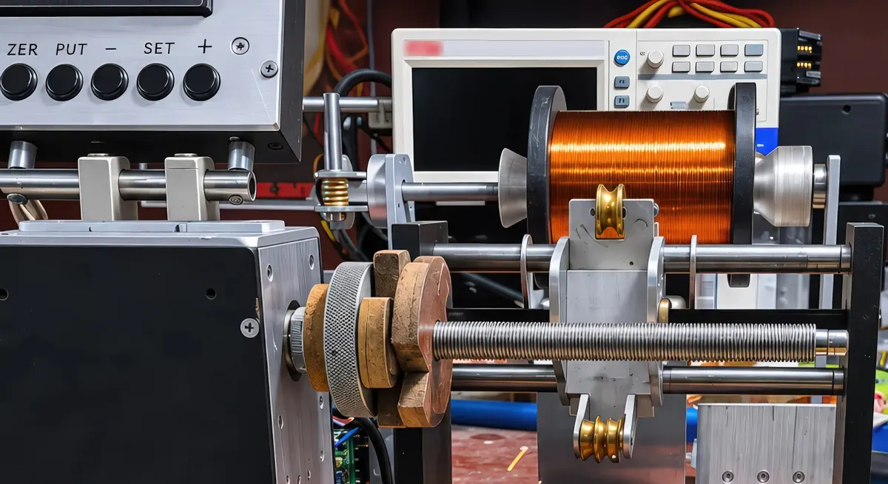
Намотка трансформаторов и дросселей для hi-fi и high-end аудиотехники
Однотактные и двухтактные (SE и PP), дроссели и регуляторы громкости — для ламповой и транзисторной техники, под вашу схему и нагрузку. Ручная намотка, характеристики на каждое изделие.
Мастерская
Каждую пару мотаем и меряем сами: индуктивность, сопротивление обмоток, полоса в нагрузке.
Прислать ТЗ[видео мастерской — уточнить у владельца: 10–20 с цикл, без людей и имени мастера, без звука]
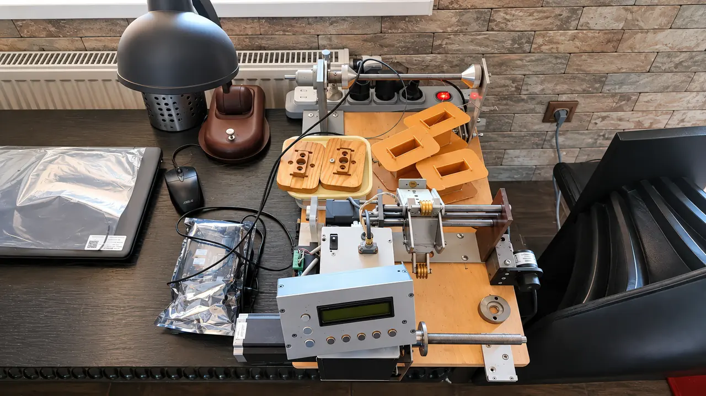
Есть лампа, схема, нагрузка — пришлите ТЗ, рассчитаем и назовём цену до оплаты.
Отправить ТЗ на расчётНе уверены в параметрах? Расскажите, что собираете, — мастер подскажет, что нужно.
Спросить мастераКороткая форма: четыре поля. Сообщение не уходит на сервер — его можно скопировать или открыть в почте.
Работы мастерской: выходные трансформаторы в корпусах заказчика. Каждое изделие — по ТЗ, вручную, с измерениями.
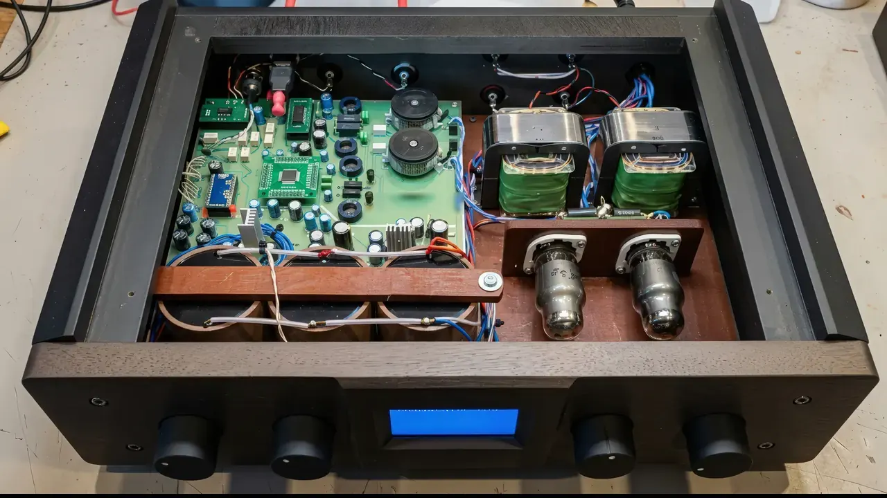
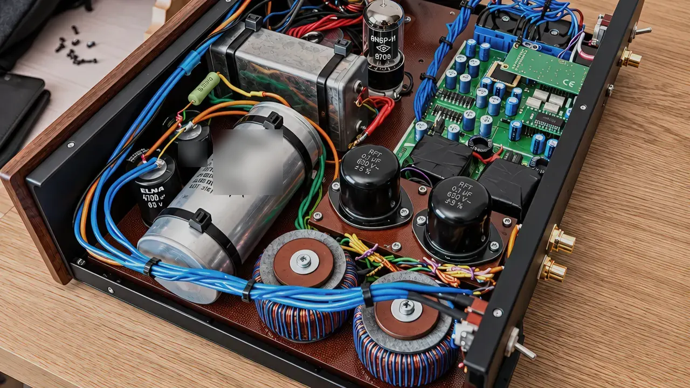

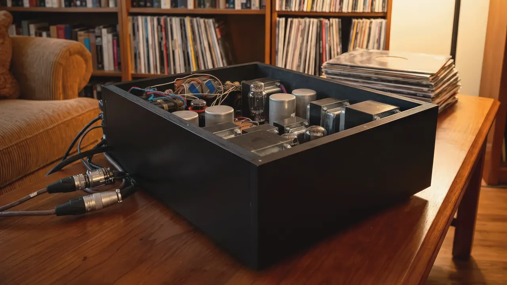
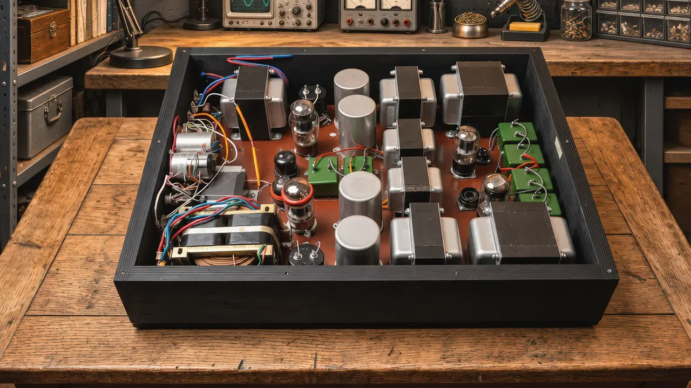
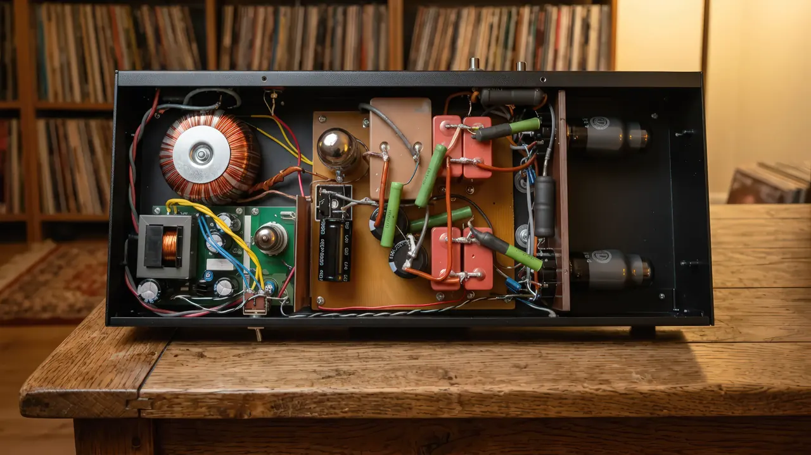
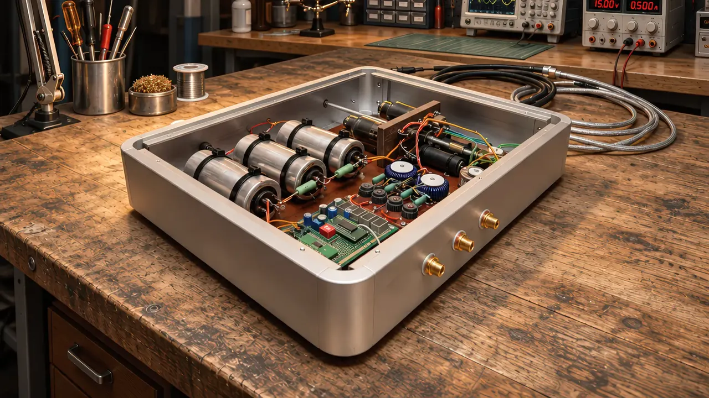
ОКБ «ВОЛЬТАР» — мастерская намотки трансформаторов и дросселей в Апшеронске, Краснодарский край; работаем с 1998 года. Намотаны тысячи изделий. Рассчитываем ламповые трансформаторы и дроссели под лампу, схему и нагрузку заказчика, мотаем вручную, измеряем каждое изделие и указываем его характеристики. Отправляем СДЭК по России и за рубеж.
На этом держится каждое изделие. Остальное — детали ТЗ.
Число витков, отводы и зазор — под режим вашей лампы, схему и акустику; нестандартная нагрузка — обычная задача.
Железо ПЛ и ШЛ из стали М6 — под задачу и лампу. Какой магнитопровод берём и почему — объясняем в смете.
Обмотки мотаем вручную любым проводом по требованию клиента; изоляция — бумага, слои пропитаны лаком.
Для каждого изделия указываем: индуктивность, сопротивление обмоток постоянному току, полоса частот в нагрузке, близкой к рабочей схеме, паразитная ёмкость.
Мотаем ламповые трансформаторы по техническому заданию: выходной трансформатор для лампового усилителя — однотактный или двухтактный, под режим вашей лампы, нагрузку и схему. Если вы хотели купить готовый выходной трансформатор для лампового усилителя — мы делаем его под заказ, с расчётом под вашу лампу: 6П3С, 6П14П, 6П6С, ГУ-50 и другие. ТВЗ — трансформатор выходной звуковой: так его часто называют в схемах и на форумах. Мотаем и силовые (анодно-накальные) трансформаторы, межкаскадные и входные.
На железе ПЛ и ШЛ (сталь М6). Выходной трансформатор для однотактного лампового усилителя: 6П3С, 6П14П, 6П6С, ГУ-50, 300B, 6С4С, а также ГМ-70, 845 и редкие лампы — см. таблицу ниже. С немагнитным зазором под ток покоя вашей лампы, отводами [4/8/16 Ом — уточнить], при необходимости — ультралинейным отводом и катодной обмоткой [уточнить]. Приведённое сопротивление и мощность — по ТЗ: [диапазон Ra и мощности — уточнить].
От 10 000 ₽ за штуку · срок от 2 недель на пару · гарантия 1 год.
Выходной трансформатор для двухтактного лампового усилителя под ваши лампы и режим — назовите лампу в ТЗ. Симметричные половины первички, отводы под нужную нагрузку, оптимальный режим лампы при нестандартной нагрузке. По желанию — декоративный короб.
От 10 000 ₽ за штуку · срок от 2 недель на пару · гарантия 1 год.
Трансформатор питания для лампового усилителя под вашу схему выпрямления: анодные, накальные и обмотки смещения, [экранная обмотка — уточнить], мощность до [… Вт — уточнить], магнитопровод [Ш / ШЛ / ПЛ — уточнить]. Замена советским ТАН и ТС по вашим напряжениям и токам. Понижающие трансформаторы 220 → 100/110 В для японской и американской аудиотехники и разделительные (изолирующие) сетевые трансформаторы для аудио — по мощности и напряжениям из ТЗ.
От 10 000 ₽ · срок от 2 недель на пару.
Дроссели фильтра анодного питания (П-фильтр в блоке питания), анодные дроссели — в анодную нагрузку каскада, а также дроссели для выходных фильтров усилителей класса D. Индуктивность и ток — по вашему ТЗ, измеренные значения указываем для каждого дросселя.
От [… ₽] за штуку · срок от 2 недель на пару.
Трансформаторный регулятор громкости под ваш источник и вход усилителя: число отводов и коэффициенты — по ТЗ; измеренные параметры — в технических характеристиках.
От [… ₽] · срок от 2 недель на пару.
По потребности клиента, в том числе под ваш дизайн [материалы и покрытия — уточнить]. Цена короба считается отдельно от трансформатора: стандартный — «от», нестандартный — по факту расчёта.
Короб — от [… ₽], отдельно от трансформатора; нестандартный — по расчёту.
Межкаскадные (междуламповые) трансформаторы под расчёт по схеме заказчика: лампы, режим и нужный коэффициент трансформации — из вашего ТЗ.
Цена и срок — по расчёту.
Меняете сгоревший или «родной» трансформатор в готовом корпусе — главное, чтобы новый встал на те же отверстия. Ниже — типоразмеры, с которыми совпадаем по крепежу. Нет вашего — пришлите фото шильдика, размеры и межцентровое расстояние крепления: подберём аналог или намотаем в нужный габарит.
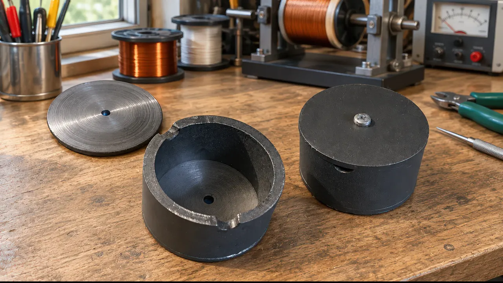
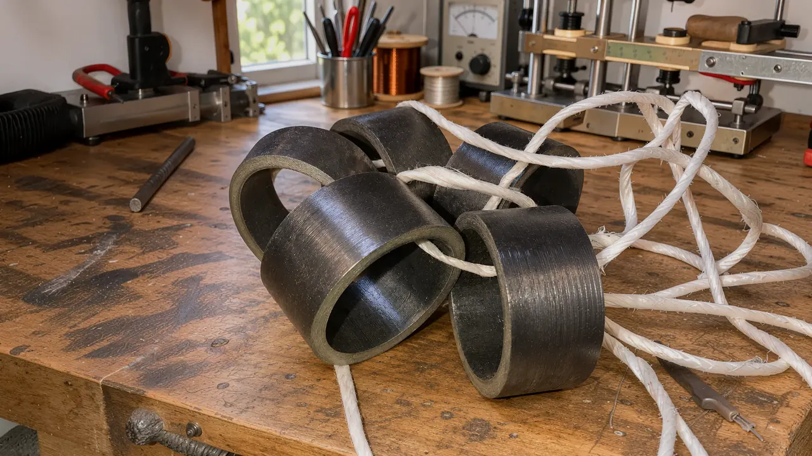
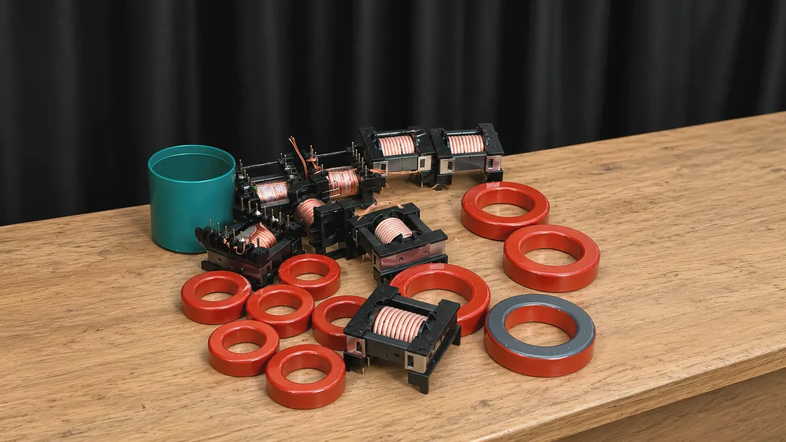
| Типоразмер | Крепёж | Заменяет по габариту |
|---|---|---|
| [типоразмер: ПЛ … — уточнить] | [межцентровое расстояние, мм — уточнить] | [каким родным трансформаторам подходит по крепежу — уточнить] |
| [типоразмер: ШЛ … — уточнить] | [межцентровое расстояние, мм — уточнить] | [уточнить] |
| [типоразмер: Ш … — уточнить] | [межцентровое расстояние, мм — уточнить] | [уточнить] |
Сравниваем только габариты и крепёж; схемы обмоток чужих изделий не используем и не публикуем.
Отправить фото шильдика и размерыСгорел трансформатор — перемотаем. Перемотка выходного трансформатора лампового усилителя, силового трансформатора блока питания и дросселя; ремонт и восстановление трансформатора, когда родного уже не найти. Работаем с вашим железом или наматываем на новом.
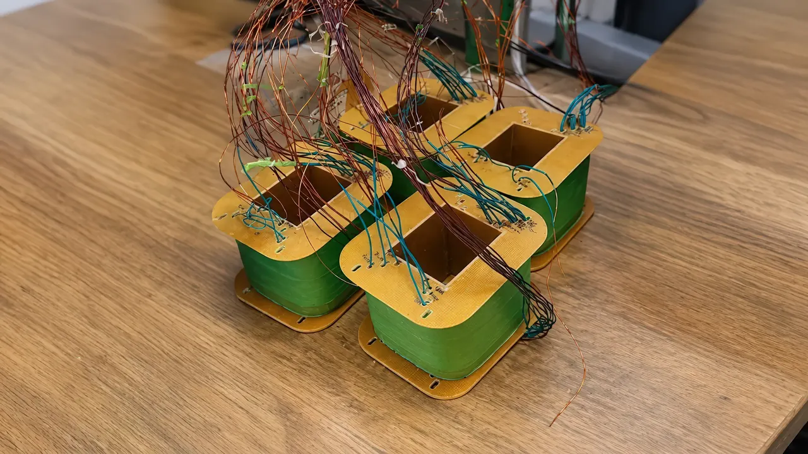
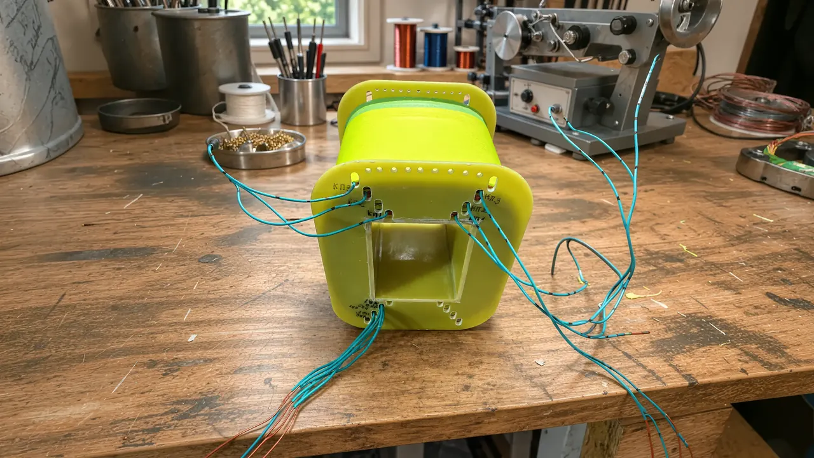
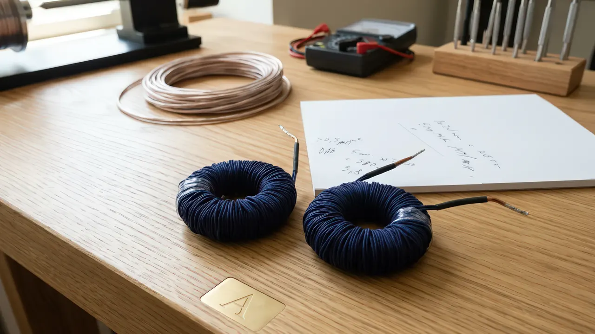
Точная цена — после осмотра.
Отправить на перемоткуЧаще всего мотаем под 6П3С (однотактные и двухтактные схемы), 6П14П, 6П6С и ГУ-50; есть опыт и с редкими лампами — 300B, 6С4С (6В4G), ГМ-70, 845, Г-811, 4654, EL12, AL4, EL8, EF14. Назовите лампу в ТЗ — рассчитаем под её режим.
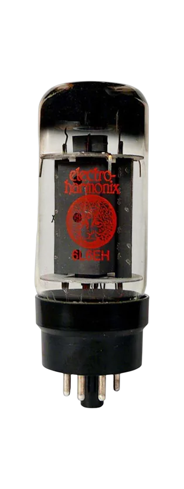
6П3С / 6L6
Выберите лампу, схему и мощность — покажем строку типового расчёта с ценой «от» и сроком и подставим данные в форму ТЗ. Если подбор не работает в вашем браузере, пользуйтесь таблицей ниже.
Два справочных расчёта, чтобы проверить себя перед заказом. Это общая физика из учебника, а не наша методика: окончательный расчёт — по вашему ТЗ.
Коэффициент трансформации n = √(Ra / Rотв). Если к отводу Rотв подключить акустику Rак, лампа увидит Ra × Rак / Rотв.
По постоянному напряжению и току после выпрямителя: напряжение и ток обмотки зависят от схемы и фильтра (ёмкостный или дроссельный вход). Падение на диодах и сопротивлении дросселя учтите отдельно.
Каждая лампа — отдельной строкой: по ней считаем цену «от» и срок. Собираете по типовой схеме — выберите строку; по своей — опишите схему в форме, рассчитаем под неё. Короб — отдельной позицией.
| Лампа | Шифр | Схема (SE — однотактная, PP — двухтактная) | Ra, кОм | Мощность, Вт | Нагрузка, Ом | Железо | От, ₽ (пара) | Срок (пара) | Характеристики |
|---|---|---|---|---|---|---|---|---|---|
| 6П3С / 6L6 | — | SE | [уточнить] | [уточнить] | 4/8 | [уточнить] | [уточнить] | от 2 недель | индуктивность, сопротивление, полоса, ёмкость |
| 6П3С / 6L6 | — | PP | [уточнить] | [уточнить] | 4/8 | [уточнить] | [уточнить] | от 2 недель | индуктивность, сопротивление, полоса, ёмкость |
| 6П14П / EL84 | — | SE | [уточнить] | [уточнить] | 4/8 | [уточнить] | [уточнить] | от 2 недель | индуктивность, сопротивление, полоса, ёмкость |
| 6П14П / EL84 | — | PP | [уточнить] | [уточнить] | 4/8 | [уточнить] | [уточнить] | от 2 недель | индуктивность, сопротивление, полоса, ёмкость |
| ГУ-50 | — | SE / PP | [уточнить] | [уточнить] | 4/8 | [уточнить] | [уточнить] | от 2 недель | индуктивность, сопротивление, полоса, ёмкость |
| 6П6С / 6V6 | — | SE | [уточнить] | [уточнить] | 4/8 | [уточнить] | [уточнить] | от 2 недель | индуктивность, сопротивление, полоса, ёмкость |
| EL34 | — | PP | [уточнить] | [уточнить] | 4/8 | [уточнить] | [уточнить] | от 2 недель | индуктивность, сопротивление, полоса, ёмкость |
| KT88 / 6550 | — | PP | [уточнить] | [уточнить] | 4/8 | [уточнить] | [уточнить] | от 2 недель | индуктивность, сопротивление, полоса, ёмкость |
| 300B | — | SE | [уточнить] | [уточнить] | 4/8/16 | [уточнить] | [уточнить] | от 2 недель | индуктивность, сопротивление, полоса, ёмкость |
| 6С4С (6В4G) / 2A3 | — | SE | [уточнить] | [уточнить] | 4/8 | [уточнить] | [уточнить] | от 2 недель | индуктивность, сопротивление, полоса, ёмкость |
| 6С33С | — | SE | [уточнить] | [уточнить] | 4/8 | [уточнить] | [уточнить] | от 2 недель | индуктивность, сопротивление, полоса, ёмкость |
| Замена ТВЗ-1-9 | — | SE | [уточнить] | [уточнить] | 4/8 | [уточнить] | [уточнить] | от 2 недель | индуктивность, сопротивление, полоса, ёмкость |
| ГМ-70 | — | SE | [уточнить] | [уточнить] | 4/8 | [уточнить] | [уточнить] | от 2 недель | индуктивность, сопротивление, полоса, ёмкость |
| 845 | — | SE | [уточнить] | [уточнить] | 4/8 | [уточнить] | [уточнить] | от 2 недель | индуктивность, сопротивление, полоса, ёмкость |
| Г-811 | — | SE | [уточнить] | [уточнить] | 4/8 | [уточнить] | [уточнить] | от 2 недель | индуктивность, сопротивление, полоса, ёмкость |
| 4654 | — | SE | [уточнить] | [уточнить] | 4/8 | [уточнить] | [уточнить] | от 2 недель | индуктивность, сопротивление, полоса, ёмкость |
| EL12 | — | SE | [уточнить] | [уточнить] | 4/8 | [уточнить] | [уточнить] | от 2 недель | индуктивность, сопротивление, полоса, ёмкость |
| AL4 | — | SE | [уточнить] | [уточнить] | 4/8 | [уточнить] | [уточнить] | от 2 недель | индуктивность, сопротивление, полоса, ёмкость |
| EL8 | — | SE | [уточнить] | [уточнить] | 4/8 | [уточнить] | [уточнить] | от 2 недель | индуктивность, сопротивление, полоса, ёмкость |
| EF14 | — | SE | [уточнить] | [уточнить] | 4/8 | [уточнить] | [уточнить] | от 2 недель | индуктивность, сопротивление, полоса, ёмкость |
Состав строк и все числа — от владельца; таблица остаётся черновиком, пока в ней есть «уточнить».
Шифр читается так: тип · схема · мощность, Вт · приведённое сопротивление, кОм · лампа (например, ВТ-SE-8-3,5-300B: выходной трансформатор, однотактный, 8 Вт, 3,5 кОм, лампа 300B). Он же — на шильдике и в технических характеристиках: при повторном заказе достаточно назвать шифр. Шифр появляется, когда мощность и Ra в строке подтверждены.
Семь составляющих каждого изделия — как описывает изделие инженер, а не реклама. Схему намотки и порядок слоёв не публикуем; для заказчика важно, какой материал и какое железо под его лампу.
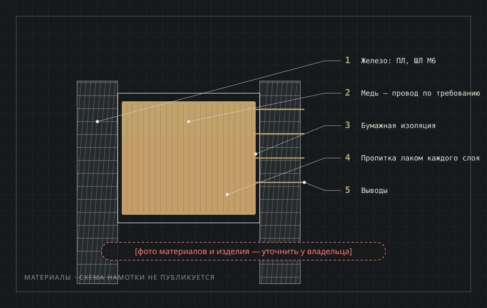
Пакет пластин ПЛ или ШЛ из стали М6. [Марка и толщина пластины — уточнить.] Под какую лампу какое железо — пишем в смете.
Любой обмоточный провод по требованию клиента; по умолчанию подбираем под ток и нагрузку сами. [Класс провода по умолчанию — уточнить.]
[Материал и исполнение каркаса — уточнить у мастера.]
Между слоями и обмотками — бумага. [Марка и толщина — уточнить.]
Каждый слой пропитывается лаком — без гула и микрозазоров, с защитой от влаги. [Лак — уточнить.]
[Тип выводов и маркировка отводов 4/8/16 Ом — уточнить.]
[Крепёж, посадочные размеры — в смете и технических характеристиках.] Короб — по потребности, под ваш дизайн, считается отдельно.
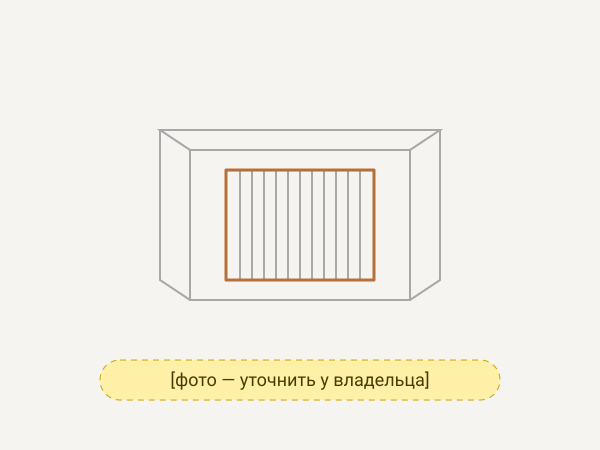
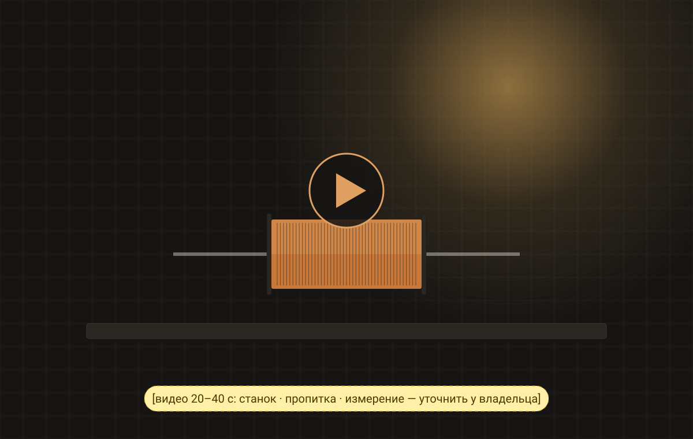
Видео хранится на сервере сайта, без сторонних видеосервисов и проигрывателей. Крупных планов укладки витков в ролике нет.
Без фото от владельца блок остаётся схемой-заглушкой. Схема намотки на фото не показывается.
Указываем технические характеристики каждого изделия — для вашего экземпляра, а не для модели: индуктивность, сопротивление обмоток постоянному току, полоса частот в нагрузке, близкой к рабочей схеме, паразитная ёмкость. Для пары — обе половины рядом. Это не сертификат и не документ по ГОСТ.
Без реального примера технических характеристик блок на сайт не выносится.
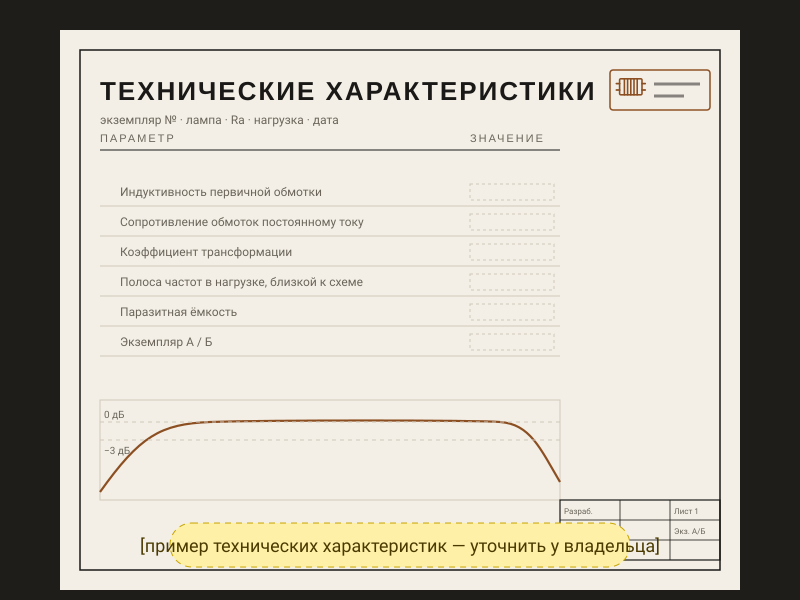
Измерено на готовом изделии; цифры относятся к конкретной паре.
Технические характеристики [пример: выходной SE под 300B, экз. А]
| Параметр | Значение | Условия измерения |
|---|---|---|
| Индуктивность первичной обмотки | [… Гн] | при токе подмагничивания [… мА], частота [… Гц] |
| Сопротивление обмоток постоянному току | первичная [… Ом] · вторичная [… Ом] | при [… °C] |
| Полоса частот в нагрузке | [… Гц — … кГц] по уровню [−1/−3 дБ] | нагрузка [… Ом], уровень [… В], источник с внутренним сопротивлением [… Ом] — близко к рабочей схеме |
| Паразитная ёмкость | [… пФ] | метод и частота — [уточнить] |
| Вывод · цвет | Обмотка | Назначение |
|---|---|---|
| [1 · цвет — уточнить] | первичная | анод |
| [2 · цвет — уточнить] | первичная | + анодного питания |
| [3 · цвет — уточнить] | вторичная | общий (0) |
| [4 · цвет — уточнить] | вторичная | 4 Ом [уточнить] |
| [5 · цвет — уточнить] | вторичная | 8 Ом [уточнить] |
Только внешние выводы и отводы — как подключать; внутреннее устройство обмоток не указывается. Тот же порядок — на шильдике изделия.
Если измерить индуктивность бытовым измерителем индуктивности без тока подмагничивания, цифра будет другой: для однотактного трансформатора важна индуктивность под рабочим током, её и указываем.
Изделия и усилители заказчиков с подписью по одному шаблону: лампа · схема · мощность · город · год — чтобы найти свой случай. [Выбрать 6–8 работ — уточнить у владельца.]
[лампа · схема · мощность · город · год — уточнить]
[лампа · схема · мощность · город · год — уточнить]
[лампа · схема · мощность · город · год — уточнить]
[лампа · схема · мощность · город · год — уточнить]
[лампа · схема · мощность · город · год — уточнить]
[лампа · схема · мощность · город · год — уточнить]
Собрали усилитель на наших трансформаторах? Пришлите фото и пару слов о схеме в мессенджер или на почту — с вашего разрешения добавим в работы с подписью. Контакты
Карточки — по реальным изделиям владельца. Без реальных работ блок на сайт не выносится.
Форма ниже: лампа или схема, однотактная или двухтактная, нагрузка, мощность. Если параметров нет — опишите, что собираете. Заказ — от одного трансформатора, без верхнего предела.
В течение [N рабочих дней — уточнить] предложим железо под задачу, назовём цену трансформатора (и короба — отдельно) и срок. Предоплата 50 %.
Ручная намотка по карте расчёта: медь, бумажная изоляция, пропитка лаком каждого слоя. О ходе сообщаем в Telegram или WhatsApp — как вам удобнее.
Измеряем каждый экземпляр: индуктивность, сопротивление обмоток постоянному току, полоса частот в нагрузке, близкой к рабочей схеме, паразитная ёмкость; для пары — обе половины рядом. Характеристики сообщаем до отправки [подтвердить].
Остаток — по завершении работы, до отправки; оплата после получения не принимается. Готовые пары можно отправлять частями после оплаты. [фото пары перед отправкой и номер отслеживания посылки — подтвердить]. Доставка: СДЭК по России. В другие страны — по договорённости.
| Изделие | От, ₽ | Срок |
|---|---|---|
| Выходной однотактный, SE (шт.) | [уточнить] | [уточнить] |
| Выходной двухтактный, PP (шт.) | [уточнить] | [уточнить] |
| Силовой (анодно-накальный, понижающий, разделительный) до [… Вт] | [уточнить] | [уточнить] |
| Дроссель до [… Гн / … мА] | [уточнить] | [уточнить] |
| Межкаскадный (междуламповый) | по расчёту | по расчёту |
| Перемотка силового / выходного | [уточнить] | [уточнить] |
Итог — после расчёта по ТЗ. Строки с «уточнить» на сайт не выносятся.
Один и тот же расчёт можно получить в разном исполнении. Цена «от» — за пару, сверх цены трансформаторов; итог — по ТЗ.
| Исполнение | Что это | Доплата от, ₽ (пара) |
|---|---|---|
| Открытое исполнение | железо в стяжках или обойме, выводы проводом | [уточнить] |
| В защитном кожухе | стальной кожух, выводы на колодку [уточнить] | [уточнить] |
| В декоративном коробе | короб под ваш корпус, отделка по согласованию | [… ₽] |
Для дросселя ТЗ короткое — индуктивность, ток и назначение, — поэтому ориентир можно дать сразу. Окончательная цена — после расчёта.
| Индуктивность · ток | От, ₽ (шт.) |
|---|---|
| до [… Гн · … мА] — анодный, фильтр БП | [уточнить] |
| [… — … Гн · … — … мА] | [уточнить] |
| свыше [… Гн · … мА] или с зазором под ток | [уточнить] |
| Опция | Доплата |
|---|---|
| Экран / кожух | [+ … ₽ — уточнить] |
| Выводы на лепестки или колодку | [+ … ₽ — уточнить] |
Итог — после расчёта по ТЗ. Строки с «уточнить» на сайт не выносятся.
Две половины рядом, измеренные в одном режиме.
Результаты измерений: индуктивность, сопротивление обмоток постоянному току, полоса частот в нагрузке, близкой к рабочей схеме, паразитная ёмкость.
Какая обмотка к какому выводу — для монтажа без догадок.
При технически правильной эксплуатации; брак своих изделий устраняем ремонтом.
Срок — 1 год [с даты отгрузки — подтвердить], при технически правильной эксплуатации.
Предоплата 50 %; остаток — по завершении работы, до отправки; оплата после получения не принимается. Если вы передумали — при отказе от заказа возвращаем предоплату за вычетом фактических расходов по заказу (закупленные материалы, выполненная часть работы). Способы: [способы оплаты: перевод по реквизитам / карта / счёт для юрлиц — уточнить].
СДЭК по России. В другие страны — по договорённости. Стоимость и срок — в смете [уточнить].
[какие документы выдаём: технические характеристики, чек/акт, договор для юрлиц — уточнить]. Характеристики — для каждого экземпляра; это не сертификат и не документ по ГОСТ. Если не подошло: [что делать, если изделие не подошло — уточнить].
Нужны схема (однотактная SE или двухтактная PP), режим лампы (анодное напряжение и ток покоя), мощность и сопротивление акустики; для однотактного под ток подмагничивания рассчитывается зазор. Для 6П3С, 6П14П (EL84), 6П6С и ГУ-50 есть строки типовых расчётов с ценой «от» и сроком — выберите свою, и отдельный расчёт не нужен. Если режим свой — опишите его в форме ТЗ, рассчитаем и назовём цену до оплаты.
Лампу (или схему, ссылку на неё), тип каскада — однотактный (SE) или двухтактный (PP), сопротивление акустики и желаемую мощность. Остальное — Ra, ток покоя, отводы, железо — рассчитаем и предложим; технические поля формы необязательны.
Однотактному каскаду (SE) нужен трансформатор с немагнитным зазором под ток покоя лампы; двухтактному (PP) — без зазора, с симметричными половинами первички. Один в другом не заменяется. Если сомневаетесь — опишите схему.
ТС-180 — силовой трансформатор от телевизоров: его ставят как силовой, если подходят напряжения и токи обмоток. Выходной трансформатор от радиолы вроде «Ригонды» рассчитан под её лампу, мощность и динамики и в другом усилителе может не совпасть по Ra, мощности и полосе. Если хотите оставить имеющийся — пришлите его данные, скажем, подходит ли он.
Трансформаторный регулятор громкости — пассивный аттенюатор: громкость меняется переключением отводов, то есть коэффициентом трансформации, а не резистором, и активных каскадов в нём нет. Он подходит, если источник сам выдаёт уровень, достаточный для раскачки усилителя. Поэтому в ТЗ нужны выходное сопротивление источника и входное сопротивление усилителя: по ним считаем отводы и шаг громкости.
Серийный намотан «на средний случай» — отсюда провалы на ВЧ и мощность, которая не держится. Мы считаем под вашу лампу, ток покоя и нагрузку, мотаем вручную на железе под задачу и измеряем каждый экземпляр. Если для вашей задачи хватит серийного — скажем честно до оплаты.
Если известны параметры (Ra, мощность, отводы, габариты) — да: намотаем под них. Названия чужих брендов в технических характеристиках не используем.
Укажите в ТЗ габариты окна и крепёж или пришлите фото старого трансформатора с линейкой — повторим посадочные [подтвердить у владельца]. Габариты готового изделия — в смете и технических характеристиках.
Зависит от схемы и бюджета: [позиция мастерской — уточнить]. Мы не советуем аморфный сердечник там, где он не даст выигрыша, и говорим об этом до заказа.
Ориентиры «от» — в строках типовых расчётов и в таблице блока «Как заказать» (дата актуальности указана). Точная смета — после расчёта по вашему ТЗ в течение [N рабочих дней — уточнить]. Трансформатор и короб считаются отдельно: стандартный короб — «от», нестандартный — по факту расчёта.
Заказ — от одного трансформатора, верхнего предела нет. Изготовление пары — от 2 недель; срок растёт пропорционально числу пар; готовые пары можно отправлять частями после оплаты. Срок и цену называем до оплаты.
Предоплата 50 %; остаток — по завершении работы, до отправки; оплата после получения не принимается. Если вы передумаете до передачи изделия, при отказе от заказа возвращаем предоплату за вычетом фактических расходов по заказу (закупленные материалы, выполненная часть работы). [фото пары перед отправкой и номер отслеживания посылки — подтвердить]. Способы: [способы оплаты: перевод по реквизитам / карта / счёт для юрлиц — уточнить].
Заказной трансформатор рассчитывается под конкретный режим лампы и нагрузку и мотается вручную по карте расчёта на подобранном железе, с бумажной изоляцией и пропиткой лаком каждого слоя. Каждый экземпляр измеряем и указываем его характеристики; гарантия — 1 год при технически правильной эксплуатации.
Можно по вашему расчёту: пришлите карту намотки, проверим и назовём цену. Свои схемы намотки мы не раскрываем, но измерения вашего изделия укажем.
[Уточнить у владельца — для серий 5–50 пар.] Карты намотки заказчиков не передаём третьим лицам — [подтвердить].
ОКБ «ВОЛЬТАР» — мастерская намотки, с 1998 года. Телефон — +7 967 082-49-40, остальные контакты — в подвале страницы. Опыт по лампам: 6В4G (6С4С), ГМ-70, 845, Г-811, 4654, EL12, AL4, EL8, EF14, 300B; работы и отзывы — по мере появления [ссылки на форумные темы — уточнить].
СДЭК по России. В другие страны — по договорённости.
1 год [с даты отгрузки — подтвердить], при технически правильной эксплуатации. Покрывает [материалы и работу — подтвердить]; не покрывает перегрузку по напряжению или току, переделку и неверное включение. При поломке напишите нам — согласуем проверку и способ отправки; [перемер за наш счёт при расхождении с указанными характеристиками — подтвердить]. Если изделие не подошло: [что делать, если изделие не подошло — уточнить].
Перемотка трансформатора имеет смысл, если железо целое, известны данные обмоток (токи и напряжения) и трансформатор помещается в габариты наших станков — например, чтобы сохранить родной трансформатор и посадочные размеры. Новый лучше, если железо повреждено, данных нет и нужен другой режим или другие характеристики. Что выгоднее в вашем случае — скажем после осмотра, до оплаты.
Да: перематываем и восстанавливаем чужие трансформаторы в пределах габаритов наших станков при известных технических данных (токи, напряжения); если сгорел полностью — восстанавливаем максимально близкие значения. Сначала осматриваем и называем цену и срок до оплаты. Пришлите фото, размеры, данные шильдика или само изделие.
[Уточнить у владельца: принимаете ли магнитопроводы заказчика; условия проверки пригодности.] По умолчанию: проверим железо и скажем до оплаты.
Индуктивность первичной обмотки при токе подмагничивания, сопротивление обмоток постоянному току, полоса частот в нагрузке, близкой к рабочей схеме, и паразитная ёмкость — у каждой цифры условия измерения. Для пары обе половины указываем рядом. Это не сертификат и не документ по ГОСТ.
Это сопротивление, которое видит лампа со стороны анода, когда к вторичной обмотке подключена ваша акустика: сопротивление нагрузки, умноженное на квадрат коэффициента трансформации. От Ra зависят мощность, искажения и режим лампы. Для каждой лампы и схемы есть оптимальное Ra — его и подбираем; в таблице типовых расчётов оно указано отдельным столбцом.
Проницаемость стали меняется с подмагничиванием и амплитудой сигнала: у однотактного трансформатора через первичку течёт постоянный ток лампы, и под ним индуктивность заметно ниже, чем без тока. Поэтому в технических характеристиках она указана при рабочем токе подмагничивания. Бытовой измеритель индуктивности работает без тока и на малом сигнале — его цифра будет другой, и это не брак.
На 1 кГц почти любой трансформатор выглядит хорошо: магнитная нагрузка на сердечник там маленькая. Трудный режим — низкие частоты на большом уровне: сердечник подходит к насыщению, растут искажения, бас становится грязным. Поэтому полосу указываем при заданном уровне и нагрузке; если вам важен бас на полной мощности — напишите это в ТЗ, рассчитаем сердечник с запасом.
Нет. «Электронным дросселем» называют транзисторную схему фильтра питания, это не намоточное изделие. Мы мотаем обычные дроссели на железном сердечнике — фильтра анодного питания и анодной нагрузки — под заданную индуктивность и ток.
Левый и правый каналы должны звучать одинаково: разная индуктивность или полоса — это разный бас и разная середина. Поэтому половины пары измеряем на одном стенде, в одних условиях, и в технических характеристиках ставим рядом — расхождение видно сразу.
Порядок и число секций, укладка и изоляция — наш расчёт и опыт, их не публикуем и не передаём. Зато открыто то, что можно проверить прибором: технические характеристики вашего экземпляра с условиями измерения. Если цифры расходятся с характеристиками — перемерим.
Он стоит между лампой и акустикой и пропускает через себя весь сигнал: от индуктивности первички зависит бас, от индуктивности рассеяния и ёмкостей — верх и поведение на импульсах, от сечения и стали — запас по мощности на низких частотах. Одна и та же 300B на разных трансформаторах звучит как разные усилители. Поэтому считаем трансформатор под режим вашей лампы и нагрузку и показываем результат цифрами измерений, а не словами.
[Уточнить у владельца по каждому пункту.]
Да, делаем межкаскадные (междуламповые) трансформаторы под расчёт по схеме заказчика. Пришлите схему и режимы ламп через форму ТЗ — посчитаем и назовём цену и срок.
Заполните, что знаете: после выбора типа изделия покажем только нужные поля. Не знаете параметров — оставьте пустыми, рассчитаем и предложим. Схему усилителя или фото можно прислать в мессенджер или на почту — адреса в подвале.
Пишете ТЗ в тетради или пришлёте письмом? Скачайте бланк, заполните и пришлите на почту или в мессенджер.
Отправка с сайта пока не подключена. Скопируйте текст заявки и отправьте его на почту мастерской или в мессенджер.
Коротко о главном; полный текст — по ссылке. Сайт не собирает данные сам и не ставит счётчиков.
Кто обрабатывает данные, какие и зачем, где они хранятся (только в России), кому передаются (перевозчику — для доставки), сколько хранятся, как узнать о своих данных, исправить их или удалить. Сайт не ставит счётчиков и не собирает данные сам: заявку вы отправляете письмом или сообщением.
Отдельный документ, на который вы соглашаетесь отметкой в форме или в бланке ТЗ: какие данные, для каких целей и на какой срок вы разрешаете обрабатывать и как отозвать согласие. Отметка в форме не стоит заранее; без неё заявку не собрать.
Кто исполнитель, как заключается договор (после согласования сметы, цены «от» на сайте — ориентир, а не оферта), предоплата и что будет при отказе от заказа, сроки, перемотка ваших изделий, доставка СДЭК, гарантия 1 год, претензии.